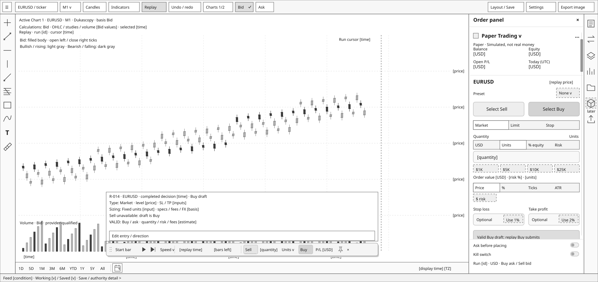

WF-SET-001-r14 · Gate G4 approved for all 113 wireframes. Single floating replay capsule, paper-trading sidebar aligned to watchlist bounds, results closed. Both workspaces use 1870 × 884. Wireframe values are placeholders; disabled reference controls do not add supported features.
